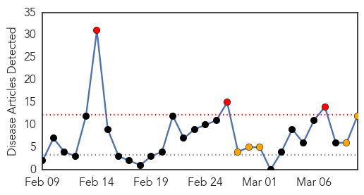
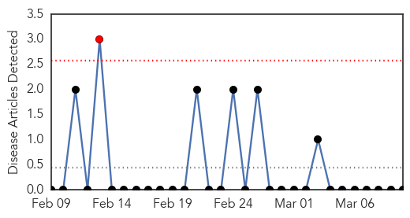

Measles
30-Day Web Trend
3 alerts, 5 warnings

30-Day Twitter Trend
0 alerts, 0 warnings

Article Locations

Article Confidences

Top Articles:
- 0.977
- Fraser Health won't identify school with measles outbreak
- 0.954
- Measles Outbreak Confirmed In New York City
- 0.898
- 2nd case of measles reported in Ottawa
- 0.860
- Measles Recent Outbreaks Due to Immunization Gaps
- 0.825
- Measles worry for Air NZ travellers
- 0.824
- Protect your child’s health -- listen to World Health Organization, your pediatrician, not Hollywood
- 0.743
- New measles outbreak warning
- 0.711
- Second case of measles being investigated
- 0.708
- Measles Symptoms To Be Taken Seriously After Outbreaks In New York
- 0.705
- New measles scare on flights - national
- 0.650
- B.C. government won't force measles vaccination amid outbreak:health minister
- 0.623
- B.C. won't force measles vaccination amid outbreak: health minister
Top Tweets:
-
No tweets found for Mar 10, 2014
Ebola
30-Day Web Trend
1 alerts, 0 warnings

30-Day Twitter Trend
0 alerts, 0 warnings

Article Locations

Article Confidences

Top Articles:
-
No articles found for Mar 10, 2014
Top Tweets:
-
No tweets found for Mar 10, 2014